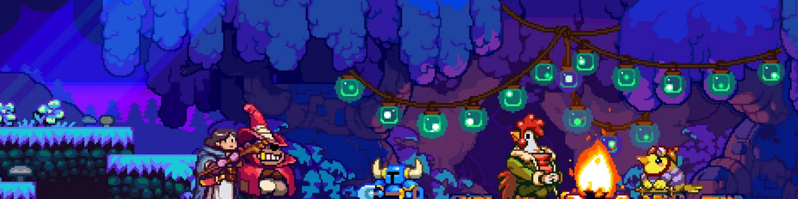

SHOVEL KNIGHT
Prior to the game, adventurers Shovel Knight and Shield Knight have traveled across the world, but while exploring the Tower of Fate, a cursed amulet traps Shield Knight and leaves Shovel Knight outside the tower. Grieving for his beloved, Shovel Knight gives up his adventures and goes into self-imposed exile. During his absence, Enchantress rises to power, spreading evil across the land. Upon hearing that the Enchantress removed the seal from the Tower of Destiny, Shovel Knight begins his journey, hoping to find and rescue Shield Knight, for that, he has to fight the Order of No Quarter members, who were sent by Enchantress to stop him.